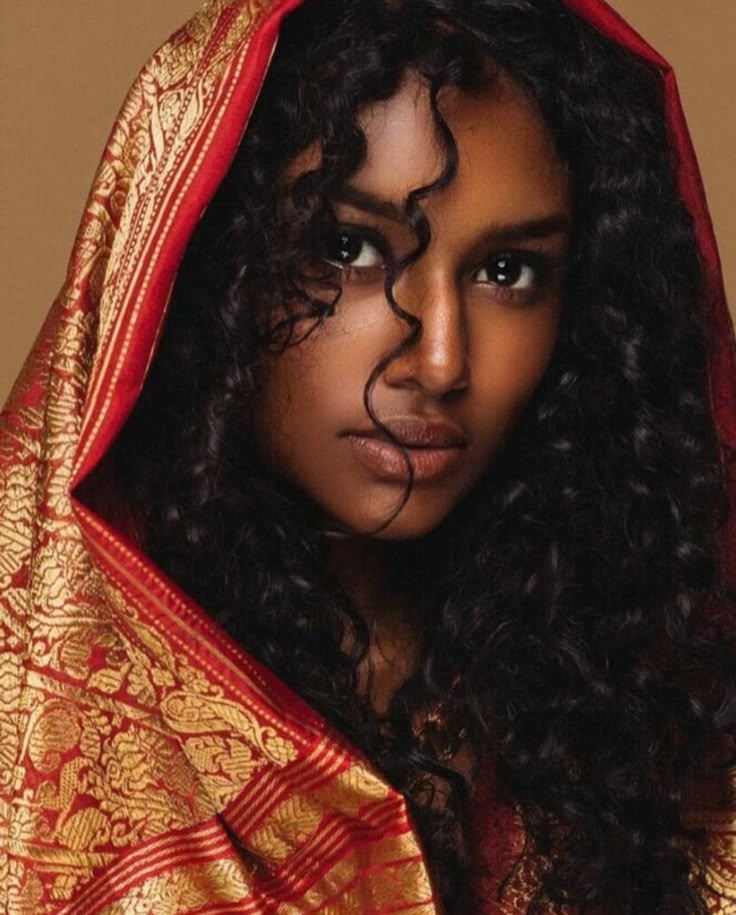

Under flashing lights and pulsing beats, she owns the night—every step, every smile,
every spark of color
BPM
113
Camelot Key
3A
Scene Count
12
Style
Cinematic
Final Result
A hypnotic journey through neon-lit nightclub aesthetics
The Original Song
A beloved 1969 Sinhala celebration of dark beauty reimagined as a club anthem
නෙත් යුග රන් තරු යුවල (Neth Yuga Ran Tharu Yuwala) — Eyes Like a Pair of Golden Stars
This project is built around "නෙත් යුග රන් තරු යුවල තමයි" by Indrani
Perera (of The Three Perera Sisters) — a joyful, self-assured Sinhala song where a
dark-skinned woman proudly declares her beauty and devotion. The song's infectious confidence, its
celebration of melanin beauty ("I am the dark beauty you're looking for"), and its warm romantic energy
made it the perfect foundation for a neon-drenched club queen anthem. I transformed its folk-pop
sweetness into a 2026 Dance-Pop Trap fusion — heavy 808 bass, sassy Queen-flow rap, sparkling synths,
and maximum dancefloor energy.
Artist
Indrani Perera The Three Perera Sisters
Lyrics
Hemasri de Alwis
Music
Victor Dalugama / Lakshman
Perera
Released
October 12, 1969 EP: Three Perera Sisters in
Harmony
From 1969 folk-pop pride anthem to neon-lit club queen banger
Creative Process
The reimagination amplified the song's core message — unapologetic celebration of dark beauty and
self-worth — while completely modernizing its delivery: translating the confidence
turned the warm Sinhala romantic declarations into fierce, sassy rap bars and a melodic pop chorus that
preserves the original "Neth Yuga" melody structure, restructuring the flow into a
fast-paced Queen-flow rap verse, a bright melodic chorus, an 808 dance break with vocal chops, and a
smooth rap/sing second verse, and reimagining the sonic palette from folk-pop acoustic
warmth to a 2026 Trap-Pop fusion — heavy 808 bass, crisp electronic hi-hats, and sparkling synth leads.
[Intro - The Original Sample Plays
Here][Instrumental Transition - Heavy 808 Bass Drop & Vinyl
Scratch]
(Yeah... MWS... New era.)
(Watch this.)
[Verse 1 - Rap - Sassy "Queen" Flow - Fast Paced]
[Beat: Heavy Trap-Pop Bounce]
Check the eyes, yeah they shine like gold
Story of a beauty that was never told
Lips soft like a petal on a rose
I'm the queen of the scene, everybody knows!
I see you searching, looking for the one
I'm the shade in the heat of the sun
Water for your thirst, yeah I let it run
Game over boy, yeah I already won!
Melanin glowing, skin is popping
Heart beat racing, ain't no stopping
I am the comfort, I am the bed
Get all the other girls out of your head!
[Chorus - Melodic Pop - Bright Synths in background]
[Matches the original "Neth Yuga" melody structure]
My eyes are shining like two golden stars
Lips like the petals, healing all your scars
My heart is the pillow where you rest your head
I am the dark beauty, like you said!
I am the dark beauty, like you said!
[Instrumental Dance Break - Heavy Bass & Vocal Chops]
(Hey! Hey! Hey! Hey!)
(Work it!)
[Verse 2 - Rap/Sing Flow - Smooth & Rhythmic]
Even in the dark rain, I bring the light
Morning or evening, I make it bright
Cool shade cover when the sun is high
I'm the river flow that will never run dry!
Walk with me baby on the journey of life
Cut through the sorrow like a sharp knife
Good times, bad times, we take it all
I'm the only one who catches you when you fall!
[Bridge - Slowed Down - Atmospheric Pads & Ad-libs]
(My heart is yours...)
(Your comfort...)
(Your home...)
[Fast Snare Roll Build Up]
[Final Chorus - Maximum Energy - Full Production]
My eyes are shining like two golden stars!
Lips like the petals, healing all your scars!
My heart is the pillow where you rest your head
I am the dark beauty, like you said!
(I'm the one you looking for!)
[Outro - Synth Fade Out with Echo]
(Yeah... I am the one.)
(Dark Beauty.)
(MWS.)
[End]
SUNO Pro — AI Music Prompt
2026 Dance-Pop, Trap-Pop Fusion, 115 BPM, Upbeat Party Rhythm, Heavy 808 Bass,
Crisp Electronic Snare & Hi-Hats, Fast Sassy Female Rap (Queens Flow), Sparkling Synth Leads, Melodic
Pop Chorus, High-Energy Club Anthem.
Project Overview
Creating a cinematic nightclub experience
Creative Vision
This project explores the fusion of AI-generated imagery and rhythmic video generation to create a
mesmerizing nightclub narrative. The character transforms through various scenes, each synchronized to a
113 BPM beat in 3A Camelot key, creating a cohesive audiovisual experience that captures the energy and
allure of a disco queen commanding the dance floor.
Prompt Strategy
Employed a "Dynamic Action" strategy, utilizing lighting-specific keywords such as "multicolored laser
beams," "red backlighting," and "disco lighting" to simulate a high-energy nightclub environment. The
prompts emphasized cinematic framing, depth of field control, and character consistency across multiple
scene variations.
Key Enhancement: Added "hazy club smoke" and "dynamic contrast" parameters to better
capture the atmospheric movement and authentic dance floor ambiance, resulting in more realistic
lighting interactions and depth.
Tools & Technology
The creative arsenal behind the project
Nano Banana Pro
Veo 3.1
Topaz Gigapixel
DaVinci Resolve
SUNO Pro
Canva
Character Development Pipeline
From concept to final disco queen
Step 1: Foundation Character
Established the base character using a reference image of a dark-skinned woman in traditional saree
attire. This initial step focused on capturing authentic facial features, skin tone accuracy, and
creating a comprehensive full-profile reference for consistency across all subsequent generations.
Step 2: Wardrobe Transformation
Implemented the first major outfit change by referencing a black-outfitted sample image. This step
involved careful attention to fabric physics, ensuring the new clothing maintained realistic draping
and movement properties suitable for dynamic dance sequences.
Step 3: Pose Engineering
Refined character positioning and body language to convey confidence and allure. Multiple pose
variations were tested to ensure natural movement flow and cinematic appeal, establishing the
foundational stance for the walking and dancing sequences.
Step 4: Accessory Integration
Enhanced the character's visual appeal through strategic jewelry placement. Each accessory was chosen
to catch and reflect the disco lighting, adding subtle sparkle and movement that complements the
overall aesthetic without overwhelming the composition.
Step 5: Environmental Adaptation
Transitioned the character into the nightclub environment, ensuring proper lighting interaction with
skin tone and clothing. This critical step established how the character would appear under various
colored lights and smoke effects throughout the final sequences.
Step 6: Material Experimentation
Explored unconventional material choices by creating a leather saree variant. This experimental phase
tested the boundaries of traditional and modern fashion fusion, ultimately informing the final
outfit selection with insights on material reflectivity and movement.
Step 7: Contemporary Styling
Pivoted to modern club attire featuring fitted jeans and a stylish top. This outfit choice better
suited the nightclub narrative while maintaining the character's elegance and allowing for more
dynamic dance movements without fabric management concerns.
Step 8: Detail Refinement
Applied micro-adjustments to the outfit including fit optimization, color saturation tweaks, and
strategic placement of reflective elements. These subtle refinements ensured the character would
photograph and animate optimally under varying lighting conditions.
Step 9: Multi-Angle Generation
Created comprehensive profile views including front, side, and back angles. These reference images
ensured consistency across different camera angles in the final video sequences and provided the AI
with clear guidance for maintaining character integrity throughout rotational movements.
Step 10: Facial Detail Capture
Generated high-resolution close-up portraits focusing on makeup details, facial expressions, and eye
characteristics. Special attention was paid to capturing the intensity and allure necessary for the
intimate close-up scenes, including the signature golden iris glow effect.
Step 11: Scene Integration
Synthesized all previous development steps into the final scene compositions, placing the fully
realized character within the immersive nightclub environment. This culminating step balanced
character prominence with atmospheric depth, ensuring the protagonist commands attention while the
environment enhances the narrative.
Visual Journey
Key frames and character studies from the development process

Image 01
Initial Character Concept
Base character profile in traditional saree, establishing facial features and skin tone reference
for consistency throughout the project.
Image 02
Wardrobe Evolution
First outfit transformation showcasing black attire with attention to fabric physics and
realistic draping for dynamic movement.
Image 03
Pose Refinement Study
Character positioning experiments focusing on confident body language and cinematic appeal for
walking sequences.
Image 04
Accessory Integration
Strategic jewelry placement designed to catch disco lighting and add subtle sparkle without
overwhelming the composition.
Image 05
Environmental Testing
Character placed in nightclub environment with proper lighting interaction, establishing visual
coherence with smoke and colored lights.
Image 06
Material Experimentation
Leather saree variant exploring unconventional materials and their interaction with dynamic
lighting effects.
Image 07
Modern Club Attire
Final outfit selection featuring contemporary fitted jeans and top, optimized for dance movement
and nightclub aesthetics.
Image 08
Detail Refinement Pass
Micro-adjustments to outfit fit, color saturation, and reflective elements for optimal
performance under varying lighting.
Image 09
Front Profile Reference
Comprehensive front-angle view ensuring character consistency across different camera
perspectives
in video sequences.
Image 10
Side Profile Study
Detailed side-angle reference capturing body proportions and silhouette for tracking shots and
rotational movements.
Image 11
Back Profile Documentation
Rear-view reference essential for scenes featuring walking away or circular camera movements
around the character.
Image 12
Facial Close-Up Portrait
High-resolution facial detail capture focusing on makeup, expression intensity, and eye
characteristics for intimate scenes.
Image 13
Golden Iris Effect Study
Specialized close-up showcasing the signature golden iris glow effect synchronized with the beat
for hypnotic visual impact.
Image 14
Final Scene Composition
Complete character integration within the immersive nightclub environment, balancing protagonist
prominence with atmospheric depth.
Scene-by-Scene Breakdown
Detailed choreography and technical specifications
Technical Foundation
BPM: 113 beats per minute | Key: 3A Camelot |
Platform:
Runway Gen-3 Alpha (Image-to-Video with text-to-video prompting)
Each scene was carefully crafted to maintain rhythmic synchronization with the
music while advancing the narrative. The 113 BPM tempo informed all movement timing, ensuring organic
flow between character actions and beat drops. The 3A Camelot key provided the emotional foundation for
the visual storytelling.
Scene 01
Closeup Walk Approach
Action
The protagonist walks confidently toward the camera with alluring, magnetic energy. The framing
focuses intimately on her face and upper body, establishing immediate visual connection with the
viewer.
Environment
Disco lighting with nightclub atmosphere. Background intentionally blurred to create cinematic
depth of field, isolating the subject as the clear focal point.
Music Synchronization
Movement precisely synced to 113 BPM rhythm in 3A Camelot key, with footsteps hitting on primary
beats.
Scene 02
Zoom Out Reveal
Action
Continuation of the confident approach toward camera. Camera dynamically zooms out from intimate
close-up to full body view, revealing complete outfit and physicality.
Environment
Disco lighting with nightclub backdrop maintained. Zoom-out reveals more of the environment while
keeping the character as primary focus.
Technical Note
No handbag or props in hand, allowing full appreciation of outfit and unencumbered movement.
Scene 03
Dance Performance
Action
She transitions from walking to dancing, moving toward camera with sensual, rhythmic
choreography.
Pure physical expression without dialogue, letting body language convey the narrative.
Environment
Full disco lighting environment with enhanced color saturation during movement peaks.
Music Synchronization
Dance movements precisely locked to 113 BPM with accent movements on beat 1 and 3 of each measure
in 3A Camelot progression.
Scene 04
Golden Eye Contact
Action
Extreme close-up on facial features and eyes, showcasing beauty in intimate detail. Intense eye
contact maintained while body continues smooth dance movements. Signature golden iris glow
pulses
rhythmically with the beat.
Environment
Disco lighting with emphasis on facial illumination, creating dramatic contrast.
Special Effects
Golden iris glow effect synchronized to bass hits, creating hypnotic visual anchor.
Scene 05
Macro Eye Focus
Action
Viewfinder narrows to display only the eyes in extreme macro detail. Golden iris glow
intensifies.
Camera performs subtle tracking movements to follow eye micro-expressions while she maintains
sensual micro-movements.
Camera Technique
Macro lens simulation with tight focus exclusively on ocular region, creating intimate and
slightly
surreal visual experience.
Special Effects
Golden iris glow reaches peak intensity, emphasized through extreme close-up framing.
Scene 06
Sensual Hand Movement
Action
She continues walking toward camera with close-up framing over chest area. Hands move gracefully
upward toward her face in choreographed gesture, delivering captivating expressions that enhance
the sensual narrative.
Environment
Disco lighting maintained. Subject remains in sharp focus while background blurs cinematically,
isolating the intimate moment.
Scene 07
Crowd Walk
Action
She walks through a bustling crowd toward camera, casually looking around with the natural
confidence of an attractive woman navigating a social space. Movement is relaxed and authentic
rather than performative.
Camera Technique
Focus locked exclusively on protagonist while crowd remains artistically blurred, creating depth
and context without distraction.
Mood
Casual everyday elegance, contrasting with the more theatrical previous scenes.
Scene 08
Stage Discovery
Action
She finds herself standing on a disco club stage, gazing down at the dancing crowd below. Camera
executes circular tracking movement from left to right, revealing side profile transitioning
smoothly to back view. Her expression conveys confusion and wonder, as if she's suddenly
appeared
on stage.
Environment
Stage lighting from above, nightclub atmosphere with crowd visible below, creating layered depth.
Camera Movement
Circular tracking shot maintaining consistent distance, side profile to back profile transition.
Scene 09
Side Profile Walk
Action
She walks with natural stride captured in clean side profile view. Simple, unadorned walking
movement showcasing body language and silhouette.
Purpose
Provides visual variety and serves as transition element, allowing viewers to appreciate
character
design from different perspective.
Scene 10
Ascending Back View
Action
She continues walking forward into the distance. Camera executes upward crane movement while
simultaneously tracking slowly forward, capturing her back profile as she recedes. Creates sense
of longing and departure.
Contemplative and slightly melancholic, contrasting with the energy of dance scenes.
Scene 11
Disoriented Wonder
Action
She appears bewildered under disco lights, examining her hands and surveying surroundings as if
questioning her reality. Camera orbits around her in close-up, capturing vulnerability and
confusion across multiple angles.
Environment
Disco lighting with slightly unstable color shifts, enhancing the disoriented atmosphere.
Camera Movement
Orbital close-up tracking maintaining intimate framing throughout rotation.
Mood
Confusion, wonder, disorientation—suggesting narrative depth beyond pure performance.
Scene 12
Final Dance Performance
Action
She delivers a sensual, smooth dance performance under full disco lighting. Camera begins in
tight
close-up then dynamically zooms out to reveal complete body movement and spatial context. Silent
performance without dialogue. No props or accessories in hand.
Environment
Full disco lighting array with maximum color saturation and atmospheric smoke effects.
Camera Movement
Close-up initiation transitioning to wide reveal through smooth zoom-out, culminating the visual
narrative.
Purpose
Serves as climactic visual statement, synthesizing all previous elements into finale performance.
Project Reflections
Learnings and technical insights
Key Takeaways
This project demonstrated the importance of iterative character development and environmental consistency
in AI video generation. The multi-step transformation process ensured character coherence across diverse
scenes, while the rhythm-synchronized prompting created organic movement that felt naturally connected
to
the music.
The addition of atmospheric elements like "hazy club smoke" and "dynamic
contrast" proved essential for achieving photorealistic nightclub aesthetics. These environmental cues
helped the AI understand spatial depth and light diffusion, resulting in more believable and immersive
scenes.
Technical Challenges
Maintaining character consistency across 12 distinct scenes while varying camera angles, lighting
conditions, and movement types presented significant challenges. The solution involved creating
comprehensive reference profiles (front, side, back) and establishing clear lighting rules in each
prompt
to guide the AI's interpretation.
Synchronizing visual rhythm with the 113 BPM audio track required precise
timing
specifications in prompts. Each scene's duration and key movement beats were explicitly defined to
ensure
the final edit would align naturally with musical phrases and percussion hits.